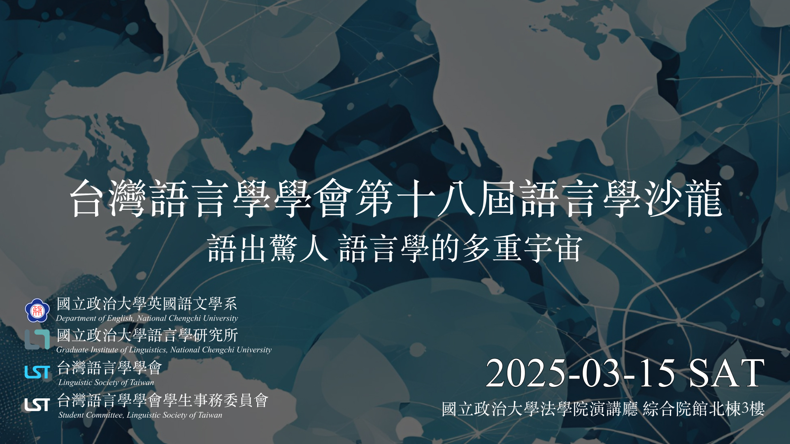

台灣語言學學會 ⎯ 第18屆語言學沙龍
沙龍名稱：語出驚人：語言學的多重宇宙
主辦單位：台灣語言學學會
協辦單位：國立政治大學英國語文學系、國立政治大學語言學研究所
時間：2025年3月15日 (六) 09:00-17:00
地點：國立政治大學法學院演講廳 📍綜合院館北棟3樓
邀請講師
- 李佳穎研究員｜中央研究院語言學研究所 [神經語言學]
🚩🚩🚩學習困難的孩子教會我的事 - 張學謙老師｜國立臺東大學華語文學系 [語言平權]
🚩🚩🚩對語言景觀看台灣語言平權的變遷：MAR（智覺錯誤、提升意識、修補破網）的考察 - 陳浩然老師｜國立臺灣師範大學英語系 [科技與語言學習]
🚩🚩🚩如何以科技及人工智慧提昇語言學習成效 - 萬宗綸老師｜國立陽明交通大學外國語文學系 [社會語言學]
🚩🚩🚩阮月嬌的多重宇宙：自媒體時代的越南華語口音與多重社會解讀 - 賴惠玲老師｜國立政治大學英國語文學系 [客語語料庫]
🚩🚩🚩臺灣客語語料庫建置及應用
報名費用
- 會員報名：NT$399 (限 2025/03/14 前繳會費或入會者)
- 非會員報名：NT$499
- 現場報名：NT$499
關於語言學沙龍
語言學沙龍是台灣語言學學會學生事務委員會的年度活動，自2007年以來已舉辦十七屆，致力於促進語言學領域的學術交流。 每一屆邀請多位專家學者，以深入淺出的方式分享語言學議題，幫助更多人了解語言的奧妙與相關專業知識，並促進語言學的日常應用與學習。
本屆議題焦點
2025年的沙龍將以「語出驚人：語言學的多重宇宙」為主軸，呈現語言學的多樣研究生態。 活動將探索語言學在微觀結構、跨語言比較及跨學科整合中的多重可能性，為與會者帶來耳目一新的學術視角。